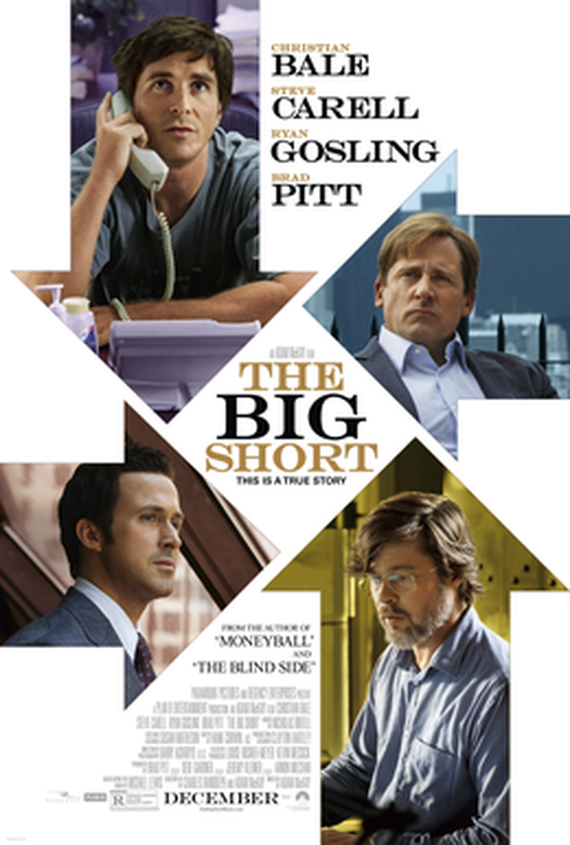
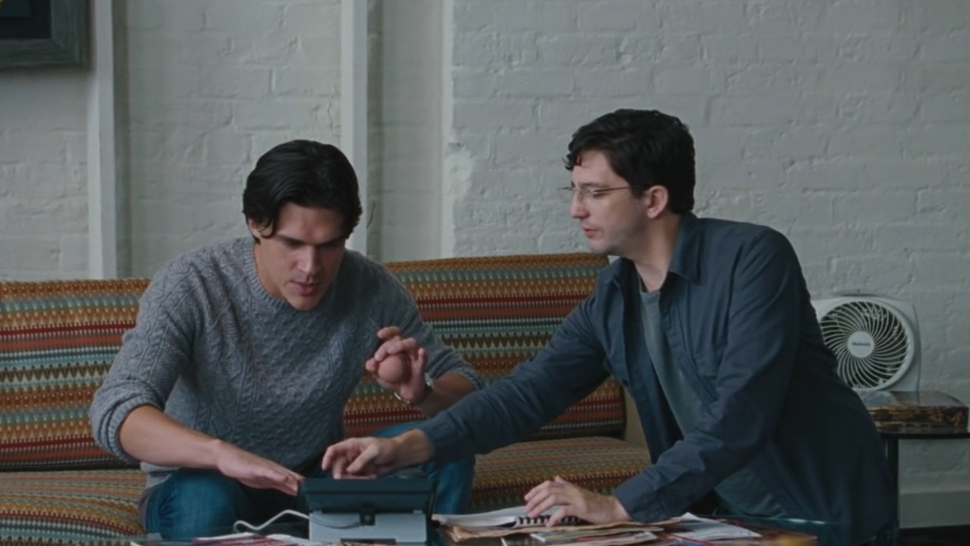
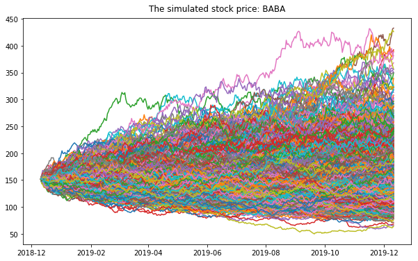

옵션 투자 대박의 비밀 - 빅 쇼트(The Big Short) 속 두 젊은이의 실제 이야기
게시: 2019-08-08T06:30:07+09:00
2015년도에 개봉한 '빅쇼트'(The Big Short)라는 영화가 있습니다. 이 영화는 크게 돈 버는 이야기를 보면서 대리 만족을 느끼는 저처럼 돈 없는 사람들에게 크게 인기를 끌었는데, 2007년의 서브프라임 사태로 인한 금융위기 때 미국 주택시장 대폭락에 베팅해서 큰 돈을 번 사람들에 대한 반쯤의 다큐멘터리 영화입니다. 반쯤 다큐멘터리 영화인 이유는 실존 인물들의 이야기에 바탕을 두고는 있지만 실명이 아니라 가명을 쓰고 또 일부 사실은 적절히 각색했기 때문입니다. 저는 크리스천 베일이나 라이언 고슬링 등의 쟁쟁한 주연들이 맡은 거물들 이야기 대신, 어쩌다 주워들은 주택담보대출 시장의 부실함에 베팅하여 큰 돈을 번 두 젊은 전업 투자자 이야기에 특히 매료되었습니다. (저는 항상 B급 감성에 충실한 B급 인생이라서 그런가봐요.) 영화 속에서는 찰리 겔러(Charlie Geller)와 제이미 쉬플리(Jamie Shipley)라고 나오는 이 젊은이들은 콜로라도의 시골 동네에서 11만 달러(약 1억3천만원)의 조촐한 자기 자본을 가지고 자기 집 차고에 회사 사무실을 차려놓고 전업 투자 생활을 합니다. 말이 좋아서 투자 회사를 세운 젊은 투자자이지, 흔히 저런 젊은이들을 우린 '백수'라고 부릅니다. 그런데 이 젊은이들은 (적어도 영화 속에서는) 이 11만 달러를 몇년 안에 무려 3천만 달러로 불려놓습니다. 무려 273배입니다 ! 이 영화는 이 젊은이들이 서브프라임 사태를 이용해서 그걸 다시 1억3천만 달러로 불려놓는 과정을 자세히 보여줍니디만, 사실 저는 1억3천만 달러 필요없습니다. 저는 그냥 3천만 달러, 아니 그냥 3백만 달러만 있어도 너무너무 충분할 정도로 소박(?)하거든요.

그런데 어떻게 11만 달러를 3천만 달러로 불려놓을 수 있었을까요 ? 거기에 대해서도 영화는 짧게나마 친절하게 설명을 해줬습니다. 그런데 처음 이 영화를 볼 때 한글 자막을 읽어보니 대체 뭘 어떻게 했다는 것인지 못 알아듣겠더라고요. 설명이 굉장히 짧게 나왔거든요. TV에서 이 영화를 다시 볼 때, 자막에 의존하지 않고 원어로 들어보려고 하니 제 영어가 짧아서 잘 못알아듣겠더군요. 결국 인터넷에서 영화 스크립트를 찾아보니 대략 이런 설명이었습니다. "그들의 전략은 단순하고도 기발했습니다. 제이미와 찰리가 알아차린 것은 이랬어요. 유가증권 시장에서는 일어날 것 같지 않은 일에 대해서는 옵션 상품을 아주 싼 값에 팔았습니다. 그러니까 그들 판단이 틀렸다면 잃는 것도 작았습니다. 하지만 그들이 맞았을 때는 아주 크게 벌었지요. 불과 몇년 안에 그들은 11만 달러를 3천만 달러로 불릴 수 있었습니다. 이제 뉴욕으로 갈 때가 되었지요."

이 젊은이들의 실제 모델은 Jamie Mai와 Charlie Ledley라는 두 사람으로서, 이들은 서브프라임 위기 이전에 이미 11만불을 (영화와는 달리) 1천2백만불로 불려놓았습니다. 이게 말이 되는 소리일까요 ? 영화 속 설명처럼 일어날 것 같지 않은 일에 대한 옵션이라면 정말 싼 값으로 살 수 있겠지만, 대부분의 경우 그런 옵션은 결국 휴지조각이 되고 맙니다. 좀더 극단적으로 이야기하면 옵션이란 그냥 로또입니다. 정말 운이 좋아서 옵션으로 한두 번 큰 돈을 버는 것은 가능할지 몰라도, 투자 회사 전체의 원금을 273배로 불리는 것은 운만으로는 불가능할 일일 것입니다. 아마 저와 같은 의문을 가진 사람들이 많을 것이라고 생각하고 인터넷을 뒤져보니 역시 거기에 대해 설명한 글이 (생각보다는 많지 않았지만) 두어건 있었습니다. https://www.timelessinvestor.com/2016/06/29/how-did-jamie-mai-and-charlie-ledley-turn-110000-into-12-million-using-value-investment/ 위 포스팅에 따르면, 이들이 11만불을 불려나갈 때 첫번째 기회는 신용카드 회사인 캐피털원(Capital One Financial)의 옵션 매수였습니다. 아마 당시 캐피털원은 뭔가 당국으로부터 조사를 받고 있어서 주가 전망이 좋지 않았던 모양인데, 이들은 캐피털원에 대해 상세히 조사를 하고 캐피털원의 부사장을 포함한 다양한 사람들을 인터뷰한 뒤에, 캐피털원 주식을 2년 뒤에 40달러에 매입할 수 있는 권한에 대한 장기옵션(LEAPS)을 3달러에 구입했습니다. 이때 투자한 돈은 전체 자금 11만불의 거의 1/4인 2만6천불이었지요. 당시 캐피털원의 주가가 30불 정도였으므로, 2년 후에 캐피털원의 주가가 최소 43불 이상으로 올라있어야 (2년간의 이자는 고려하지 않더라도) 본전 수준이라는 것을 생각하면 굉장히 모험적인 투자였습니다. 그러나 이 캐피털원은 당국 조사 결과 혐의없음이 밝혀졌고, 결국 이들의 투자 2만6천불은 52만6천불로 뻥튀기 되었습니다. 무려 20배의 수익이었습니다. 이들의 두번째 기회도 비슷한 장기옵션이었습니다. United Pan-European Cable(UPC)라는 회사의 장기옵션을 무려 50만불어치 구입을 했는데, 이것이 대박을 쳐서 550만불이 되었습니다. 세번째 기회도 크게 다르지 않았습니다. 가정용 환자 산소 공급기 회사에 2만불어치 옵션을 투자한 것이 300만불이 되었지요. 이렇게만 보면 너도나도 옵션에 투자를 해야 합니다. 그러나 위에서도 언급했지만, 옵션은 좀 심하게 이야기해서 해당 회사에 대해 잘 알지 못하는 사람에게는 사실상 로또입니다. 어떤 권리증이 2년 뒤에 그렇게 큰 가치를 가진 유가증권이 될 가능성이 높다면 애초에 그런 낮은 가격에 팔 리가 없지요. 돈을 딸 확률이 50%나 된다고 하더라도, 어지간한 사람은 거기에 전재산의 1/4은 커녕 1/40도 넣지 못합니다. 그런데 대체 저 두 사람은 캐피털원이 혐의를 벗고 주가가 크게 뛸 것이라는 것을 어떻게 예측했던 것일까요 ? 또 차고에 사무실을 차린 고작 11만불짜리 애송이 투자자를 왜 캐피털원 부사장이 만나주었을까요 ? 여기에 대해 가장 그럴 듯 해보이는 설명은 아래에 나와 있더군요. 여기에 옮겨 적습니다. 그대로 직역한 것은 아니고 주요 부분만 제맘대로 발췌 편집 덧붙이기한 거에요. https://www.quora.com/How-did-Jamie-Mai-and-Charlie-Ledley-turn-110-000-into-12-million-and-then-130-million-by-using-the-value-investment-method 질문 : Jamie Mai와 Charlie Ledley는 대체 어떻게 서브프라임 이전에 11만불을 1천2백만불로 늘렸던 거지 ? 답 : 그거야 Michael Lewis(영화 The Big Short의 원본이 된 'The Big Short: Inside the Doomsday Machine'라는 책을 쓴 작가입니다)가 그렇게 포장을 한 것 뿐이야. 그 사람 글만 읽으면 차고에 사무실 차려놓고 11만불을 그렇게 뻥튀기하는 것이 쉬워보이지. 하지만 실제로는 그렇지 않아. Jamie Mai는 뉴욕주립대에서 회계석사학위를 받고 컨설팅 회사인 Ernst & Young에 취직한 뒤 대형 투자은행 감사일을 했어. 그 친구 아빠는 미국에서 가장 유서깊은 투자인수 회사들 중 하나를 20년 이상 운영한 사람이고, 그 다음에 리먼(Lehman) 브라더스 경영진에서 일하기도 했어. 그러니까 Jamie는 부잣집 아들이고 그냥 가족들의 돈 일부로 투자를 했던 거야. 초기 투자금 11만불 어쩌고 하는 이야기는 '좁은 의미에서만 맞는' 이야기라구. 그런 푼돈 날려도 후속 투자금 걱정은 없는 거였어. 그러니까 11만불 어쩌고하는 것은 최초 VaR (Value at Risk, 어떤 투자에 대한 risk 산정을 할 때 Monte Carlo 시뮬레이션 등을 통해 수치 계산을 하는데 그때 초기 투자금으로 정하는 금액) 같은 거였다구. Charlie Ledely에 대해서는 잘 모르지만 걔도 비슷한 배경을 가지고 있을 거야.

(VaR 시뮬레이션의 결과입니다. 1년 후에 대략... 최저 -60%에서 최대 +290% 정도의 수익이 예상된다는군요. 저런 수많은 시나리오에 따른 수많은 반복 계산을 하기 위해 투자금융사에서도 컴퓨팅 파워가 많이 필요합니다. 여태까지는 blade server 형태로 많이 가지고 있었는데, 해외에서는 GPU를 이용한 CUDA computing으로 훨씬 싸고 빠르게 처리한다는군요. 그러나 국내 퀀트 분들은 여전히 CPU 방식을 선호하신다고들 합니다.)
그러니까 이 두 사람의 과감한 옵션 투자는 혹시 투자가 잘못되어 알량한 자본금을 다 날려도 별 상관없었기 때문이었다는 이야기입니다. 이 설명이 그럴싸하게 들리는 것은, 특히 저 위에서 언급한 이들의 2번째 기회 때문입니다. 캐피털원 옵션에서 벌어들인 50만불을 모조리 UPC 옵션에 투자를 한다는 것은 정상적인 사람은 할 수 없는 투자입니다. 거듭 말하지만 좀 과장하자면 옵션은 정말 로또거든요. 로또처럼 만기라는 것이 있으니 장기 가치 투자를 할 수 있는 것도 아닙니다. 그런데 가진 전 재산 50만불, 그러니까 5억원어치 로또를 산다 ? 이건 돈이 아주 많은 사람이 아니면 할 수 없는 일입니다. 물론 그렇다고 해서 이 두 사람이 실력은 없고 그냥 집이 부자였던 금수저에 불과했다는 이야기는 절대 아닙니다. 금수저라고 다 성공하는 것도 아니고, 집안 돈을 순식간에 다 말아먹는 금수저들도 꽤 많을 것입니다. 누가 뭐라고 해도, 이들은 철저한 조사와 분석을 통해 매우 훌륭한 옵션 투자를 한 것은 확실하고, 그러므로 이 두 사람은 출신에 무관하게 매우 훌륭한 투자자입니다. 이상이 제가 매우 궁금해하던 영화 빅 쇼트에서의 두 젋은이의 성공 비결이었습니다. 좀 시시하지요 ?
# 결론 : 돈도 없고 배운 것도 없는 개백수 젊은이가 옵션 투자로 성공할 수 있는 방법... 따위는 없다. 집안이 부자라면 공부 열심히 하고, 집안이 가난하면 공부 열심히 하는거에 플러스로 돈 아껴서 저축하자.
Source : https://www.springfieldspringfield.co.uk/movie_script.php?movie=the-big-short https://en.wikipedia.org/wiki/The_Big_Short_(film) https://www.timelessinvestor.com/2016/06/29/how-did-jamie-mai-and-charlie-ledley-turn-110000-into-12-million-using-value-investment/ https://www.quora.com/How-did-Jamie-Mai-and-Charlie-Ledley-turn-110-000-into-12-million-and-then-130-million-by-using-the-value-investment-method